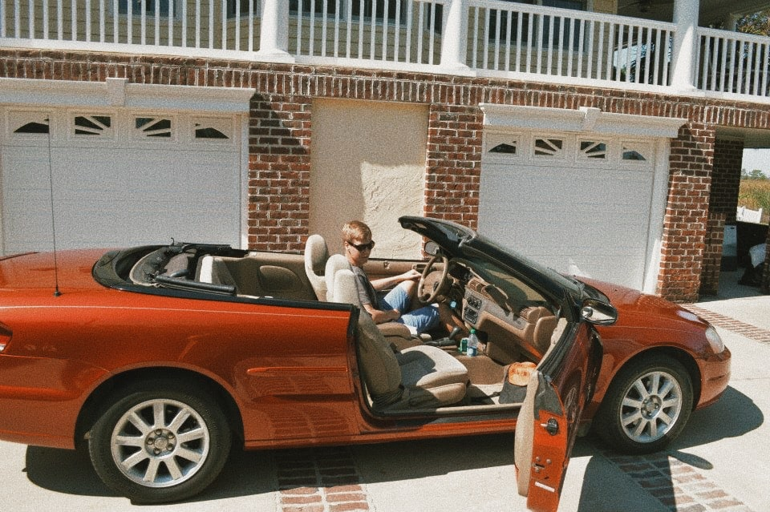

Kresten på tur i USA
Kresten fortæller om
lange køreture i USA
Om at være på "roadtrip"
"Roadtrip er klart at anbefale, hvis man skal opleve USA" fortæller Kresten. "Det er bare en enorm frihed, at kunne køre lige derhen, man gerne vil. Derudover var det bare en drengedrøm at få lov til at køre rundt i fede biler. Vi havde ikke planlagt noget som helst hjemmefra, så det var virkelig frit at sætte sig ind i bilen og så bestemme, hvor man skulle køre hen. På en roadtrip-tur gælder det jo om, ikke at have planlagt for meget - det var vi rigtig gode til og det blev en kanon tur. Når det er sagt, vil jeg sige, at man måske godt kunne have planlagt en lidt bedre rute, eller bestilt flybilletter ud og hjem fra forskellige stater - det ved jeg nu til næste gang."
Et råd fra Kresten: ”Man skal være 25 år for at leje en bil i USA. Vi var begge 20 år, da vi rejste. Vores løsning blev, at vi købte en bil derovre, og solgte den, da vi skulle hjem igen. Med lidt amerikanske kontakter og hjælpere gik det rigtig fint, men undersøg lige, hvad det smarteste er for dig, før du tager afsted”
Om at rejse i USA
"USA har bare altid været stedet for mig. Vores tur blev helt sikkert som den gjorde, fordi vi kendte nogle amerikanere i forvejen, hvilket betød at vi bare kom til at kende endnu flere. Amerikanere er så gæstfrie og elsker at få besøg - i hvert fald dem, vi mødte. For os betød det, at vi kun en enkelt nat boede på hostel, ellers sov vi hos min værtsfamilie, værtsfamiliens familie og venner, og en enkelt familie, Søren mødte på sit fritidsarbejde i sommerferien før vi tog afsted - Det fortæller nok lidt om, hvor gæstfrie de er derovre. Vi følte derfor, at vi prøvede at være "ægte amerikanere": vi var til collegefester, skød med våben og fejrede thanksgiving. Og så spiste vi selvfølgelig også en masse fastfood."
Et råd fra Kresten: "Nyd bilturene. Det kan godt være, det virker kedeligt og uoverskueligt, at skulle køre de lange strækninger, men det er også bare helt specielt at have tiden til det. Når jeg mødes med Søren, kan vi stadig huske alle de sange, radioen spillede, som vi skrålede med på, mens vi kørte på den amerikanske highway"